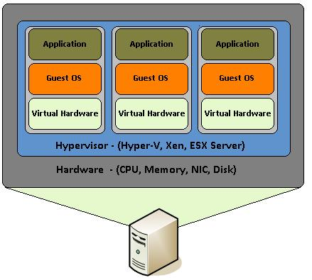

Virtualization vs Containerization
What Is Virtualization?
Virtualization provides for the existence of multiple, smaller virtual servers, within the framework of a larger server’s physical environment. The virtualization software which runs on the parent basically allocates resources to each virtual server along with its own operating system, drivers, binaries, libraries, and applications. These virtual servers are isolated from each other and have no knowledge they are running within a virtualized platform nor aware that they are sharing resources with the other virtual machines.
The software that is vital for virtualization is called a hypervisor. A hypervisor can be hardware, software, or firmware-based. Essentially, it is a virtual layer that separates the physical server from the virtual machines and allows for multiple guest operating systems to run side by side within that system. The hypervisor ensures that the VM’s have access to a defined amount of resources utilizing the main physical servers resources and that they remain separated and are portioned to each virtual machine as configured. VM’s can also update and modify the applications within their own space without affecting the applications on another virtual machine.
VM’s can also provide an increased level of security as with isolation comes better control of the applications contained within each VM. If one VM becomes infected or corrupted, it will be kept separate from the other virtual machines as well as the host server. The VM is not aware of malicious activity on other portions of the physical server they reside on.
Since each virtual machine is essentially a virtual copy of the hardware of the host server and uses its own operating system, it can be resource-heavy and slow, while consuming a great deal of memory and processing power. Each virtual machine can also be significant in size, which limits its portability and thus cannot easily be shared.
Containerization
What Is A Container?
Containerization was developed to solve many of the problems of virtualization. The purpose of the containers is to encapsulate an application and its dependencies within its own environment. This allows them to run in isolation while they are using the same system resources and the same operating system. Since the resources are not wasted on running separate operating systems tasks, containerization allows for a much quicker, lightweight deployment of applications. Each container image could be only a few megabytes in size, making it easier to share, migrate, and move.

A container engine can easily manage large numbers of containers so we can create, add, and remove containers as needed. The maintenance of containers is also simplified since we need to update, patch, and fix bugs on only one operating system. It is also worth noting that containers decrease hardware costs since the allocation of multiple applications to the same hardware improves hardware utilization.
However, containerization is not without its disadvantages. The most important one is security, as any vulnerability in the host kernel will affect all of the containers as well. Furthermore, in the case of malware, the container that is compromised can be terminated and replaced with a new clean image. Some of the vital features available in virtual machines are not available in containers either, which makes it all that more difficult to keep the system secure. Since only one operating system runs on the server, all applications will need to be based on the same operating system, which limits the adaptability and diversity of applications that can be used.
Virtualization vs Containerization
- Speed: When it comes to speed, containers were meant to significantly reduce the time needed to deploy and run an application. The container starts immediately, since the operating system is already up and running, so the application will start up without any noticeable delay. This is an excellent solution for a development environment, mainly, as it saves time in the application testing cycle. On the other hand, virtual machines need to start the entire operating system, which includes the full boot process. This will also include the startup of the services, and it will take much longer than it would for a container.
- Resources: Since virtual servers run separate operating systems, and every system call has to go through the virtualization layer, a certain amount of overhead is created, causing more resources to be used. This is particularly true for memory usage, as virtual machines consume memory even when they aren’t running any user processes. However, CPU virtualization is relatively cheap, so the CPU overhead of a virtual machine can be much smaller. When it comes to containers, they can start up pretty quickly, so their memory consumption doesn’t increase. There is also much less overhead as they are using the same operating system without a hypervisor to go through.
- Security and isolation: In regard to security and isolation, virtualization wins, as it keeps virtual machines separate and isolated from each other. One infected virtual machine will not affect another one, and each virtual machine can incorporate its own security protocols since they are running in a fully isolated environment. However, since containers only isolate data and applications at the process level, they provide a less secure environment and depend on the security protocols of the host system.
- Portability and application sharing: Since container images are much smaller than virtual machines, they are easier to transfer and save space on the host’s filesystem. Virtual machines, on the other hand, need to have a copy of the whole operating system, including the kernel, system libraries, configuration files, all the directories required by the operating system and all the utilities. This dramatically increases the size of the image and is not that easy to share. Container images can be shared in any manner of ways, and there are a number of application sharing hubs on the internet. Virtual machine images do not have such centralized hubs and would usually need to be uploaded to another server instead.
- Operating system requirements: A virtual machine is best used in the case when a business needs to run multiple applications that require the full functionality of a dedicated operating system. However, if most of the applications have the same operating system requirements, the containers would be a much more practical solution.
- Application lifecycle: Containers are highly suitable for short-term application needs, as they can be set up quickly, are portable, and can be started up much faster. They are, however, limited by the lack of a dedicated operating system, processing, and storage resources. Containers should be used when the biggest priority is maximizing the number of applications running on a minimal amount of servers. However, virtual machines are far better suited for applications that need to be used for an extended period of time, since they run in a virtualized environment that is more robust and versatile.
Hybrid Solutions?
However, it is also important to note that there are also ways of combining virtualization and containerization so that both technologies’ advantages are brought together. Such a combination is called a hybrid container architecture, and it can combine them by putting a virtual machine inside of a container, or a single container inside of a virtual machine, or multiple containers inside a virtual machine. This way, we can get the security and isolation of a virtual machine with the quick and lightweight setup of an application inside of a container.
Virtualization Containerization More secure and fully isolated Less secure and isolated at the process level Heavyweight, high resource
usageLightweight, less resource usage Hardware-level virtualization Operating system virtualization Each virtual machine runs in
its own operating systemAll containers share the host
operating systemStartup time in minutes and slow provisioning Startup time in milliseconds and quicker provisioning Summary
To summarize, we can see that each technology serves a different purpose and that choosing one depends heavily on the user and application needs and server capacity. Since both virtualization and containerization come with significant advantages and drawbacks, choosing one over the other needs to be done carefully with these points in mind. To decide more efficiently, we can see a quick overview of the comparison in the table below.